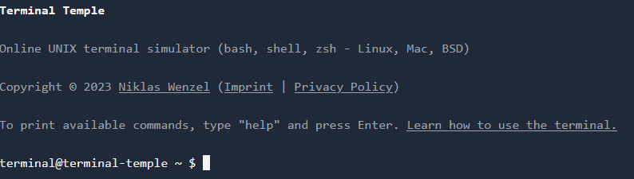

Introduction to File Manipulation in Linux
Linux file manipulation is a fundamental skill for managing data efficiently. This guide will introduce you to essential commands like cp, mv, mkdir, rm, and ln, which are crucial for handling files and directories. I hope with this blog post you will learn something just like I did. Remember, I too and learning as I go. So if you are a seasoned Linux user, please feel free to provide feedback in the comments.
Understanding the Linux File System
Before getting into commands, it’s important to understand the Linux file system’s hierarchical structure, which organizes files and directories.
Basic Commands Overview
Command Options Table
| Command | Option | Description |
|---|---|---|
| cp | -r |
Recursively copy directories and their contents. |
-i |
Prompt before overwriting files. | |
-u |
Copy only when the source file is newer than the destination file or when the destination file is missing. | |
| mv | -i |
Prompt before overwriting files. |
-u |
Move only when the source file is newer than the destination file or when the destination file is missing. | |
| mkdir | -p |
Create parent directories as needed. |
| rm | -r |
Recursively remove directories and their contents. |
-i |
Prompt before every removal. | |
-f |
Force removal without prompt. | |
| ln | -s |
Create symbolic links instead of hard links. |
-f |
Remove existing destination files. |
Copying Files and Directories with cp
The cp command is used to copy files and directories. Learn its syntax and options to efficiently duplicate data.
Syntax and Options
- Basic syntax:
cp [options] source destination - Use
-rfor recursive copying of directories.
Examples of Use
- Copy a file:
cp file1.txt file2.txt - Copy a directory:
cp -r dir1/ dir2/
Moving and Renaming Files with mv
The mv command moves or renames files and directories.
Syntax and Options
- Basic syntax:
mv [options] source destination - Use
-ito prompt before overwriting.
Examples of Use
- Move a file:
mv file1.txt /new/location/ - Rename a file:
mv oldname.txt newname.txt
Creating Directories with mkdir
The mkdir command creates new directories.
Syntax and Options
- Basic syntax:
mkdir [options] directory_name - Use
-pto create parent directories as needed.
Examples of Use
- Create a directory:
mkdir new_directory - Create nested directories:
mkdir -p parent/child/grandchild
terminal@terminal-temple dir2 $ mkdir -p parent/child/grandchild
terminal@terminal-temple dir2 $ ls
fun parent
terminal@terminal-temple dir2 $ cd parent
terminal@terminal-temple parent $ ls
child
terminal@terminal-temple parent $ cd child
terminal@terminal-temple child $ ls
grandchild
terminal@terminal-temple child $ cd grandchild
terminal@terminal-temple grandchild $ lsRemoving Files and Directories with rm
The rm command deletes files and directories.
Syntax and Options
- Basic syntax:
rm [options] file_name - Use
-rto remove directories and their contents.
Examples of Use
- Remove a file:
rm file1.txt - Remove a directory:
rm -r directory_name
terminal@terminal-temple dir2 $ rm -r parent
terminal@terminal-temple dir2 $ ls
funCreating Links with ln
The ln command creates links between files.
Hard Links vs. Soft Links
- Hard links: Direct pointers to the data on disk.
- Soft links (symbolic links): Pointers to the file name.
Examples of Use
- Create a hard link:
ln file1.txt link1.txt - Create a symbolic link:
ln -s file1.txt symlink1.txt
Using Wildcards in Linux
Wildcards are special characters used in commands to match multiple files or directories. They simplify file manipulation by allowing you to specify patterns instead of explicit names.
Wildcard Characters Table
| Wildcard | Meaning |
|---|---|
* |
Matches any number of characters, including none. |
? |
Matches exactly one character. |
[ ] |
Matches any one of the enclosed characters. |
[! ] |
Matches any character not enclosed. |
[[:class:]] |
Matches any character in the specified class. |
Commonly Used Character Classes Table
| Character Class | Meaning |
|---|---|
[:digit:] |
Matches any digit. |
[:lower:] |
Matches any lowercase letter. |
[:upper:] |
Matches any uppercase letter. |
[:alpha:] |
Matches any letter. |
[:alnum:] |
Matches any alphanumeric character |
Wildcard Examples Table
| Pattern | Matches |
|---|---|
*.txt |
All files ending with .txt |
file?.txt |
Files like file1.txt, fileA.txt but not file12.txt |
data[0-9].csv |
Files like data1.csv, data9.csv |
report[!0-9].doc |
Files like reportA.doc, reportB.doc but not report1.doc |
*[[:lower:]123] |
Files with lowercase letters or digits 1, 2, or 3 |
Creating A Sandbox
To practice file manipulation safely, create a sandbox directory to experiment with commands without affecting important data.
Creating The Directory
- Create a new directory:
mkdir sandbox
terminal@terminal-temple ~ $ ls
Documents Downloads Music my_new_directory Pictures
terminal@terminal-temple ~ $ mkdir sandbox
terminal@terminal-temple ~ $ ls
Documents Downloads Music my_new_directory Pictures sandbox
terminal@terminal-temple sandbox $ mkdir dir1
terminal@terminal-temple sandbox $ mkdir dir2
terminal@terminal-temple sandbox $ ls
dir1 dir2Copying Some Files
- Copy some files into the sandbox directory.
terminal@terminal-temple sandbox $ cp ../my_new_directory/my_new_subdirectory/new_file.txt sandbox.txt
terminal@terminal-temple sandbox $ ls
dir1 dir2 sandbox.txt
terminal@terminal-temple sandbox $ ls -l
total 2
drwxr-xr-x 2 terminal staff 64 Sep 27 07:44 AM dir1
drwxr-xr-x 2 terminal staff 64 Sep 27 07:45 AM dir2
-rwxr--r-- 1 terminal staff 0 Sep 27 07:50 AM sandbox.txtMoving Files
- Move a file from one directory to another.
terminal@terminal-temple sandbox $ mv sandbox.txt fun
terminal@terminal-temple sandbox $ ls
dir1 dir2 fun
terminal@terminal-temple sandbox $ mv fun dir1
terminal@terminal-temple sandbox $ ls
dir1 dir2
terminal@terminal-temple sandbox $ cd dir1
terminal@terminal-temple dir1 $ ls -l
total 0
-rwxr--r-- 1 terminal staff 0 Sep 27 07:54 AM fun
terminal@terminal-temple sandbox $ mv dir1/fun dir2
terminal@terminal-temple sandbox $ cd dir2
terminal@terminal-temple dir2 $ ls
fun
terminal@terminal-temple dir2 $ ls -l
total 0
-rwxr--r-- 1 terminal staff 0 Sep 27 07:54 AM funUnderstanding Recursive Operations
Recursive operations are essential for managing directories and their contents effectively. When a command operates recursively, it processes all files and subdirectories within a specified directory. This is particularly useful for tasks that involve entire directory trees, such as copying, moving, or deleting files en masse.
Key Points:
- Recursive Option (
-ror-R): Many Linux commands, such ascp,rm, andchmod, offer a recursive option to apply actions to all files within a directory and its subdirectories. - Use Cases: Recursively copying directories (
cp -r source/ destination/), deleting directories (rm -r directory_name), or changing permissions (chmod -R 755 directory). - Caution: Recursive commands can potentially affect a large number of files, so it’s crucial to use them carefully to avoid unintended changes or data loss.
Common Mistakes and How to Avoid Them
When manipulating files and directories, beginners often encounter pitfalls that can lead to data loss or system issues. Here’s how to avoid these common mistakes:
Key Mistakes:
- Accidental Deletion: Using
rmwithout caution can lead to permanent data loss. - Overwriting Files: Commands like
cpandmvcan overwrite files without warning.
Prevention Tips:
- Interactive Prompts: Use the
-ioption with commands likermandcpto prompt before overwriting or deleting files (e.g.,rm -i file.txt). - Backups: Regularly back up important data to prevent loss.
- Double-Check Commands: Before executing, review command syntax and options, especially for recursive operations.
Practical Examples and Use Cases
Understanding practical applications of these commands will enhance your file management skills:
Examples:
- Batch File Operations: Use
cpandmvfor batch operations on multiple files using wildcards (e.g.,cp *.txt backup/). - Directory Organization: Utilize
mkdirto organize files into directories (e.g.,mkdir -p projects/2024/january). - File Cleanup: Regularly use
rmto clean up temporary files and maintain system efficiency.
Advanced Tips for Efficient File Management
Enhance your command-line proficiency with these advanced techniques:
Tips:
- Wildcard Combinations: Use wildcards to efficiently target multiple files (e.g.,
rm *.logremoves all log files). - Command Chaining: Combine commands using
&∨to execute multiple tasks in sequence (e.g.,mkdir new_dir && cd new_dir). - Scripting: Write shell scripts to automate repetitive tasks, improving efficiency and reducing errors.
Troubleshooting Common Issues
Addressing common issues can save time and prevent frustration:
Solutions:
- Command Not Found: Ensure that the command is installed and correctly spelled.
- Permission Denied: Use
sudoto execute commands with elevated privileges if necessary and if you are sure you know what you are doing. - File Not Found: Verify file paths and names, especially when using relative paths.
Security Considerations
Security is crucial when manipulating files, particularly on shared or sensitive systems:
Key Considerations:
- File Permissions: Use
chmodto set appropriate permissions, restricting access to sensitive files. - Ownership: Use
chownto set correct ownership, especially when files are shared among multiple users. - Safe Deletion: Consider using tools like
shredfor securely deleting files.
Conclusion and Best Practices
Mastering file and directory manipulation is vital for effective Linux system management. By understanding command syntax, using options wisely, and adhering to best practices like regular backups and cautious use of recursive operations, you can efficiently manage your files while minimizing the risk of errors or data loss.
Best Practices:
- Regularly back up important data.
- Use interactive prompts to confirm destructive actions.
- Employ wildcards and scripting for efficient file management.
- Pay attention to file permissions and ownership for security.
By following these guidelines and continuously practicing, you’ll develop robust file management skills that are essential for any Linux user.
Quick Takeaways
- Master basic commands:
cp,mv,mkdir,rm,ln. - Use options wisely to enhance command functionality.
- Practice safe file manipulation to avoid data loss.
FAQs
- What is the difference between
cpandmv?cpcopies files, whilemvmoves or renames them.
- How do I create a directory in Linux?
- Use the
mkdircommand, e.g.,mkdir new_directory.
- Use the
- Can I recover files deleted with
rm?- Generally, no. Use caution and consider backups.
- What are hard links and soft links?
- Hard links point directly to data; soft links point to file names.
- How do I avoid accidental file deletion?
- Use the
-ioption withrmto prompt before deletion.
- Use the
Your Turn
I hope this guide helps you master file manipulation in Linux. Please share your feedback and share this article with others who might find it useful!
References
Happy Coding! 🚀
